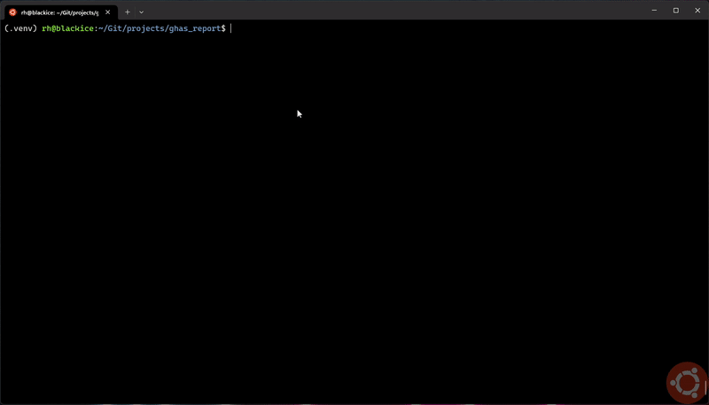

The GHAS Reporting tool is a Python script designed to retrieve various types of GitHub Advanced Security (GHAS) alerts for specified organizations or repositories and generate a report based on the provided options. The output formats supported are CSV and JSON.
Supported alert types are code scanning (vulnerabilities in source code), secret scanning (exposed sensitive data), and dependabot alerts (security risks and outdated dependencies).
The script offers flexibility in configuring the report, enabling users to focus on the most relevant security aspects for their organization or repository.
The GHAS Reporting project consists of two Python scripts: ghas_report.py and ghas_enc_key.py.
The primary script, ghas_report.py, is designed to retrieve various types of GitHub Advanced Security (GHAS) alerts for specified organizations or repositories and generate a report based on the provided options. The output formats supported are CSV and JSON.
The main goal of this script is to aid vulnerability management and support development and security teams by saving time and providing valuable insights into the security status of their projects.
The ghas_enc_key.py script is primarily used for the first-time setup and changing of the GitHub API key, which is stored in encrypted format in the ghas_conf.json configuration file. This script ensures the secure storage of the API key and allows for easy updates whenever needed.
The script can also be executed without a configuration file, in which case the API key must be specified in an environment variable called GHAS_API_KEY.
During execution of the script the --owner and --repo, or --org options must be specified. The --owner option is used to specify the owner of the repository or organization. The --repo option is used to specify the repository name. The --org option is used to specify the organization name.
GitHub Advanced Security is a suite of security tools provided by GitHub to help protect your code and detect vulnerabilities before they reach production. GHAS includes Code scanning, Secret scanning, and Dependabot alerts. For more information, visit GitHub Advanced Security.

To use these scripts, you will need:
To generate a GitHub API key for an individual repository, follow the instructions here.
For enterprise repositories with Single Sign-On (SSO), follow the instructions here.
python --version or python3 --version in the terminal or command prompt. If you don't have Python 3.x installed, download, and install it from the official Python website.pip install -r requirements.txt
This command installs the necessary packages listed in the requirements.txt file.
ghas_enc_key.py script to set up the GitHub API key for the first time:python3 ghas_enc_key.py --api-key
Follow the prompts to enter your GitHub API key. The script will store the API key securely in the ghas_conf.json configuration file.
Alternatively, you can specify the API key in an environment variable called GHAS_API_KEY and run the script without storing the key in the configuration file. This is useful, if you are using a secret management system to store the API key.
ghas_report.py script to generate reports. For usage instructions and examples, refer to the Usage Examples section in the documentation.Before using ghas_report.py, you must run the ghas_enc_key.py script to set up your API key. This script securely stores your GitHub API key in a JSON configuration file.
python3 ghas_report.py -a
This command generates all alert reports, including Alert Count, Code Scanning, Secret Scanning, and Dependabot alert reports, in the default CSV format.
python3 ghas_report.py -a -o -wJ
This command generates all open alert reports, including Alert Count, Code Scanning, Secret Scanning, and Dependabot alert reports and writes the output in JSON format.
Please note that the Alert Count report lists only open alerts by default, even without specifying the -o option.
python3 ghas_report.py -c -s
This command generates both a Code Scan alert report and a Secret Scanning alert report in the default CSV format.
python3 ghas_report.py -d -wA -lr /path/to/reports
This command generates a Dependabot alert report and writes the output to all supported formats (CSV and JSON) in a custom reports directory specified by /path/to/reports.
python3 ghas_report.py -l -wJ -lc /path/to/ghas_conf.json -lk /path/to/.ghas_env
This command generates an Alert Count report, writes the output in JSON format, and uses custom locations for the configuration file (/path/to/ghas_conf.json) and the encryption key file (/path/to/.ghas_env).
For more usage examples and options, refer to the options sections for each script in the documentation.
ghas_report.py| Option | Description |
|---|---|
| -h, --help | Show help message and exit |
| -v, --version | Show program's version number and exit |
| -a, --all | Generate all alert reports |
| -l, --alerts | Generate Alert Count report |
| -c, --codescan | Generate Code Scan alert report |
| -s, --secretscan | Generate Secret Scanning alert report |
| -d, --dependabot | Generate Dependabot alert report |
| -o, --open | Generate report(s) for open alerts only |
| -n, --owner | Specify the owner of a GitHub repository, or organization |
| -g, --org | Specify the name of a GitHub organization |
| -r, --repo | Specify the name of a GitHub repository |
| -wA, --output-all | Write output to all formats at once |
| -wC, --output-csv | Write output to a CSV file (default format) |
| -wJ, --output-json | Write output to a JSON file |
| -lc \ |
Specify file location for the configuration file ("ghas_conf.json") |
| -lk \ |
Specify file location for the encryption key file (".ghas_env") - overrides the location specified in the configuration file |
| -lr \ |
Specify file location for the reports directory - overrides the location specified in the configuration file |
ghas_enc_key.py| Option | Description |
|---|---|
| -h, --help | Show help message and exit |
| -v, --version | Show program's version number and exit |
| -a, --api-key | Prompt for a GitHub API key; replaces existing API key or generates a new config & key file if none exist (first-time setup) |
| -lc \ |
Specify file location for the "ghas_report.py" configuration file ("ghas_conf.json") |
| -lk \ |
Specify file location for the "ghas_report.py" encryption key file (".ghas_env") |
| -lr \ |
Specify file location for the "ghas_report.py" reports directory |
The "ghas_config.json" JSON configuration file is used to specify connection details, location and project information for the GitHub Advanced Security (GHAS) reporting tool. A sample configuration file "ghas_config_example.json"" is included in the repo. Simply rename the file to "ghas_config.json" and run the initial setup script to securely store your GitHub API key, then populate the file with your unique project information.
{
"connection": {
"gh_api_url": "https://api.github.com",
"gh_api_key": "GITHUB_API_KEY"
}
}
This section specifies the details for connecting to the GitHub API.
If no custom file locations are specified in the configuration file and no command-line options are provided, the default location for both the reports and the key file will be the script directory. The default location for report files is a folder within the script directory, which will be created with the current date as the folder name.
{
"location": {
"reports": "",
"key_file": ""
}
}
This section specifies the location of the reports and the encryption key file.
The projects section of the configuration file allows you to define your projects, including the owner, organizations, and repositories associated with each project. You can add multiple projects, each with its own set of organizations and repositories. This setup is useful when working with multiple projects, organizations, and repositories, especially in the context of a GitHub Enterprise account.
{
"projects": {
"YOUR_PROJECT1": {
"owner": "GITHUB_OWNER",
"organizations": [
"ORG1"
],
"repositories": [
"REPO1",
"REPO2"
]
},
"YOUR_PROJECT2": {
"owner": "GITHUB_OWNER",
"organizations": [
"ORG1",
"ORG2"
],
"repositories": [
"REPO1"
]
}
}
}
This section specifies the project information, including the owner, organizations, and repositories.
organizations field.By using this structure, you can customize the script to generate reports for specific projects, organizations, and repositories, making it easier to manage security alerts across a large number of repositories and organizations.
If you encounter any issues while using the GHAS Report scripts, try the following troubleshooting steps:
The GHAS Report project is licensed under the Apache License 2.0. For more information, see the LICENSE file in the project repository.